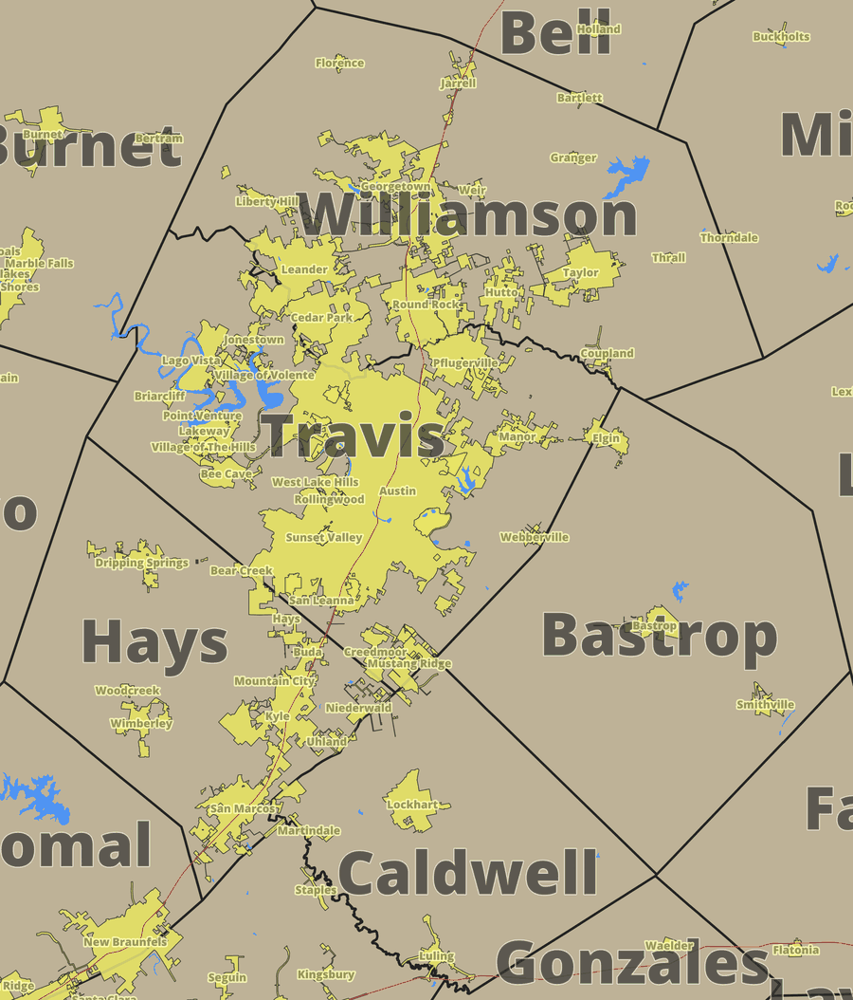

Paso 2 de 8
¿En qué condado vive?
Texas está dividido en áreas grandes llamadas condados. Cada condado administra los trámites relacionados con las elecciones de las personas que viven allí, de forma parecida a como una oficina de correos atiende una zona determinada. Usted no elige su condado. El condado que le corresponde depende de su domicilio.
El área de Austin abarca más de un condado. El centro de la ciudad se encuentra en el Condado de Travis, mientras que algunas zonas del norte pertenecen al Condado de Williamson y algunas del suroeste, al Condado de Hays. Las áreas cercanas también pueden formar parte de los condados de Bastrop o Caldwell.

Encuentre su condado
¿Vive a menos de 10 millas (16 kilómetros) del centro de Austin? Es muy probable que se encuentre en el Condado de Travis. Si vive más lejos o tiene dudas, use la casilla de abajo para confirmar cuál es su condado.
Recuérdelo. Cuando sepa cuál es su condado, por favor, anótelo o memorícelo. Lo necesitará en los próximos pasos. Este sitio web no guarda esta información.
¿Por qué es importante? Su condado administra las elecciones, gestiona su registro electoral y determina dónde le corresponde votar. Por eso, necesitamos identificarlo primero.
⚠ Cuidado — errores comunes
- No suponga cuál es su condado por la dirección postal. Una dirección que incluya “Austin, TX” puede encontrarse fuera de los límites de la ciudad e incluso pertenecer a otro condado. Use la casilla de arriba para confirmarlo.
- Use su domicilio (el lugar donde realmente vive), no un apartado postal, una tienda de buzones ni su trabajo.
- Cerca de los límites, siempre verifique. A más de 10 millas del centro, no suponga que es Travis; búsquelo.
- Equivocarse de condado lo arruina todo (el registro, la boleta y el lugar de votación dependen de él). Verifíquelo aquí.
- Anote o memorice su condado. Este sitio web no lo recordará por usted, y lo necesitará en los próximos pasos.